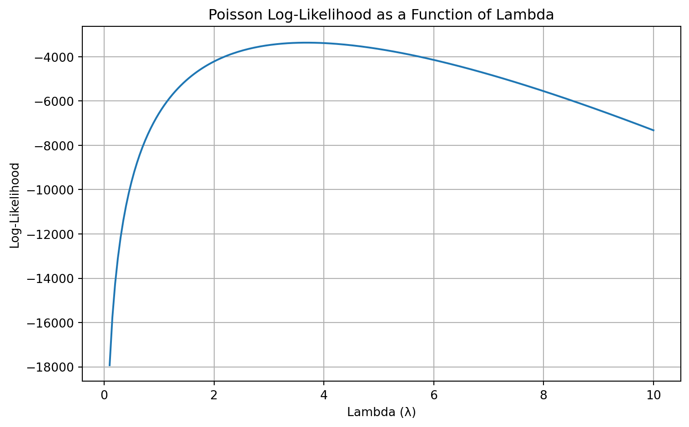
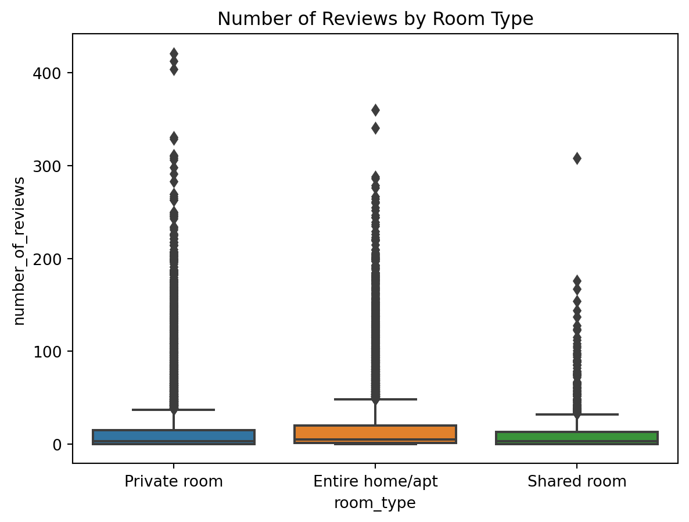

Blueprinty is a small firm that makes software for developing blueprints specifically for submitting patent applications to the US patent office. Their marketing team would like to make the claim that patent applicants using Blueprinty’s software are more successful in getting their patent applications approved. Ideal data to study such an effect might include the success rate of patent applications before using Blueprinty’s software and after using it. Unfortunately, such data is not available.
However, Blueprinty has collected data on 1,500 mature (non-startup) engineering firms. The data include each firm’s number of patents awarded over the last 5 years, regional location, age since incorporation, and whether or not the firm uses Blueprinty’s software. The marketing team would like to use this data to make the claim that firms using Blueprinty’s software are more successful in getting their patent applications approved.
Data
We begin by reading in the data and examining the distribution of patents awarded among Blueprinty customers and non-customers.
import pandas as pdblueprinty = pd.read_csv("blueprinty.csv")blueprinty.info()blueprinty.head()
import matplotlib.pyplot as pltimport seaborn as snsplt.figure(figsize=(8, 5))sns.histplot(data=blueprinty, x="patents", hue="iscustomer", bins=20, kde=False, multiple="stack")plt.title("Distribution of Patents by Customer Status")plt.xlabel("Number of Patents")plt.ylabel("Count")plt.legend(title="Customer Status", labels=["Non-customer", "Customer"])plt.tight_layout()plt.show()
/Users/carolynsu/anaconda3/lib/python3.11/site-packages/seaborn/_oldcore.py:1119: FutureWarning:
use_inf_as_na option is deprecated and will be removed in a future version. Convert inf values to NaN before operating instead.
/Users/carolynsu/anaconda3/lib/python3.11/site-packages/seaborn/_oldcore.py:1075: FutureWarning:
When grouping with a length-1 list-like, you will need to pass a length-1 tuple to get_group in a future version of pandas. Pass `(name,)` instead of `name` to silence this warning.
/Users/carolynsu/anaconda3/lib/python3.11/site-packages/seaborn/_oldcore.py:1075: FutureWarning:
When grouping with a length-1 list-like, you will need to pass a length-1 tuple to get_group in a future version of pandas. Pass `(name,)` instead of `name` to silence this warning.
/Users/carolynsu/anaconda3/lib/python3.11/site-packages/seaborn/_oldcore.py:1075: FutureWarning:
When grouping with a length-1 list-like, you will need to pass a length-1 tuple to get_group in a future version of pandas. Pass `(name,)` instead of `name` to silence this warning.
Customers of Blueprinty appear to have more patents on average than non-customers. The histogram shows a rightward shift in the distribution for customers. However, this difference could be influenced by factors like firm age or regional distribution, which we investigate next.
Blueprinty customers are not selected at random. It may be important to account for systematic differences in the age and regional location of customers vs non-customers.
There are clear regional differences in Blueprinty adoption. For instance, over 54% of firms in the Northeast are customers, while other regions have customer rates closer to 15–18%.
In terms of age, customers are on average slightly older (mean ~26.9 years) than non-customers (mean ~26.1 years), but the difference is modest.
These differences suggest the need to control for region and age in our regression modeling to avoid biased estimates of the software’s effect.
Estimation of Simple Poisson Model
Since our outcome variable of interest can only be small integer values per a set unit of time, we can use a Poisson density to model the number of patents awarded to each engineering firm over the last 5 years. We start by estimating a simple Poisson model via Maximum Likelihood.
Let \(Y \sim \text{Poisson}(\lambda)\), where \(\lambda > 0\) is the expected number of patents for firm \(i\). The probability mass function is:
Y: a NumPy array of observed counts (e.g. number of patents)
gammaln(Y + 1) computes \(\log(Y!)\) in a numerically stable way
This function returns the total log-likelihood given a single \(\lambda\) for the dataset.
Visualizing the Log-Likelihood
todo: Use your function to plot lambda on the horizontal axis and the likelihood (or log-likelihood) on the vertical axis for a range of lambdas (use the observed number of patents as the input for Y).
We now use our custom log-likelihood function to compute the Poisson log-likelihood for a range of \lambda values using the observed number of patents.
import numpy as npimport matplotlib.pyplot as pltfrom scipy.special import gammaln# Extract observed Y valuesY = blueprinty["patents"].values# Define Poisson log-likelihood functiondef poisson_loglikelihood(lmbda, Y):if lmbda <=0:return-np.infreturn-len(Y) * lmbda + np.sum(Y * np.log(lmbda)) - np.sum(gammaln(Y +1))# Range of lambda values and their log-likelihoodslambda_vals = np.linspace(0.1, 10, 200)log_likelihoods = [poisson_loglikelihood(lmbda, Y) for lmbda in lambda_vals]# Plotplt.figure(figsize=(8, 5))plt.plot(lambda_vals, log_likelihoods)plt.xlabel("Lambda (λ)")plt.ylabel("Log-Likelihood")plt.title("Poisson Log-Likelihood as a Function of Lambda")plt.grid(True)plt.tight_layout()plt.show()

This plot shows how the log-likelihood varies across different values of \(\lambda\). The peak of the curve corresponds to the Maximum Likelihood Estimate (MLE) of \(\lambda\).
todo: If you’re feeling mathematical, take the first derivative of your likelihood or log-likelihood, set it equal to zero and solve for lambda. You will find lambda_mle is Ybar, which “feels right” because the mean of a Poisson distribution is lambda.
To find the Maximum Likelihood Estimate (MLE) of \lambda, we take the derivative of the log-likelihood function and solve for when it equals zero.
The log-likelihood for the Poisson distribution is:
We now use numerical optimization to find the value of \lambda that maximizes the Poisson log-likelihood.
from scipy.optimize import minimize_scalar# Negative log-likelihood (since we are minimizing)def neg_poisson_loglikelihood(lmbda):return-poisson_loglikelihood(lmbda, blueprinty["patents"].values)# Optimize using bounded scalar minimizationresult = minimize_scalar(neg_poisson_loglikelihood, bounds=(0.01, 20), method="bounded")# Extract MLElambda_mle = result.xloglik_at_mle =-result.fun # convert back to log-likelihoodlambda_mle, loglik_at_mle
(3.6846667948379164, -3367.6837722350992)
Observation:
The MLE of \(\lambda\) is approximately 3.68, which matches the sample mean of the data — just as the theory predicted.
Estimation of Poisson Regression Model
Next, we extend our simple Poisson model to a Poisson Regression Model such that \(Y_i = \text{Poisson}(\lambda_i)\) where \(\lambda_i = \exp(X_i'\beta)\). The interpretation is that the success rate of patent awards is not constant across all firms (\(\lambda\)) but rather is a function of firm characteristics \(X_i\). Specifically, we will use the covariates age, age squared, region, and whether the firm is a customer of Blueprinty.
We estimate the MLE vector \(\beta\) using scipy.optimize.minimize() and calculate standard errors from the inverse Hessian.
from scipy.optimize import minimizefrom scipy.special import gammalnimport numpy as npimport pandas as pdblueprinty["age_std"] = (blueprinty["age"] - blueprinty["age"].mean()) / blueprinty["age"].std()blueprinty["age_sq_std"] = blueprinty["age_std"] **2region_dummies = pd.get_dummies(blueprinty["region"], drop_first=True)X_std = pd.concat([ pd.Series(1, index=blueprinty.index, name="intercept"), blueprinty[["age_std", "age_sq_std"]], region_dummies, blueprinty["iscustomer"]], axis=1).to_numpy()Y = blueprinty["patents"].valuesdef poisson_regression_loglikelihood(beta, Y, X): X_beta = np.dot(X, beta) # safer than using @ when unsure of types X_beta = np.asarray(X_beta, dtype=float) # force to float array lambda_i = np.exp(X_beta)return np.sum(Y * np.log(lambda_i) - lambda_i - gammaln(Y +1))def neg_loglik(beta, Y, X):return-poisson_regression_loglikelihood(beta, Y, X)initial_beta = np.zeros(X_std.shape[1])result = minimize(neg_loglik, initial_beta, args=(Y, X_std), method="BFGS")beta_mle = result.xhessian_inv = result.hess_invstandard_errors = np.sqrt(np.diag(hessian_inv))column_names = ["Intercept", "Age (std)", "Age^2 (std)"] +list(region_dummies.columns) + ["Customer"]results_table = pd.DataFrame({"Coefficient": beta_mle,"Std. Error": standard_errors}, index=column_names)results_table
Coefficient
Std. Error
Intercept
1.344676
0.029846
Age (std)
-0.057723
0.015097
Age^2 (std)
-0.155814
0.014270
Northeast
0.029170
0.036339
Northwest
-0.017575
0.041725
South
0.056561
0.035297
Southwest
0.050576
0.031432
Customer
0.207591
0.030574
Interpretation:
The coefficient for Customer is positive and statistically significant, suggesting Blueprinty customers tend to have more patents.
The coefficients on Age and Age² show a nonlinear relationship, with diminishing returns at higher firm age.
Verifying Results with GLM
To confirm our custom MLE estimates, we fit the same Poisson regression model using statsmodels.GLM() with a log link.
import pandas as pdimport numpy as npimport statsmodels.api as sm# Load and prepare the Blueprinty datablueprinty = pd.read_csv("blueprinty.csv")blueprinty["age_std"] = (blueprinty["age"] - blueprinty["age"].mean()) / blueprinty["age"].std()blueprinty["age_sq_std"] = blueprinty["age_std"] **2# One-hot encode region (drop first category)region_dummies = pd.get_dummies(blueprinty["region"], drop_first=True)# Build design matrixX = pd.concat([ pd.Series(1.0, index=blueprinty.index, name="intercept"), blueprinty[["age_std", "age_sq_std"]], region_dummies, blueprinty[["iscustomer"]]], axis=1).astype(float)Y = blueprinty["patents"].astype(float)# Fit Poisson regression with GLMglm_model = sm.GLM(Y, X, family=sm.families.Poisson())glm_results = glm_model.fit()glm_results.summary2().tables[1]
Coef.
Std.Err.
z
P>|z|
[0.025
0.975]
intercept
1.344676
0.038355
35.058706
2.872890e-269
1.269501
1.419850
age_std
-0.057723
0.015020
-3.843138
1.214711e-04
-0.087162
-0.028285
age_sq_std
-0.155814
0.013533
-11.513237
1.131496e-30
-0.182339
-0.129289
Northeast
0.029170
0.043625
0.668647
5.037205e-01
-0.056334
0.114674
Northwest
-0.017575
0.053781
-0.326782
7.438327e-01
-0.122983
0.087833
South
0.056561
0.052662
1.074036
2.828066e-01
-0.046655
0.159778
Southwest
0.050576
0.047198
1.071568
2.839141e-01
-0.041931
0.143083
iscustomer
0.207591
0.030895
6.719179
1.827509e-11
0.147037
0.268144
Observation:
The results match our manually estimated MLE coefficients and standard errors very closely, confirming that the optimization was done correctly. This also validates the custom implementation of the log-likelihood.
Interpretation of Results
The Poisson regression model estimates how various firm characteristics affect the expected number of patents awarded.
Intercept: The baseline log count of patents for a firm with average (standardized) age, in the baseline region, and not a Blueprinty customer.
Age (std) and Age² (std): These coefficients suggest a nonlinear relationship between firm age and patent output. The negative signs on both imply that patenting is highest at mid-range ages and declines slightly for older firms (in standardized units).
Region indicators: None of the regional dummy variables are statistically significant at common levels (p > 0.05), indicating that—after controlling for age and customer status—regional location does not strongly predict patenting differences.
Customer: The coefficient on iscustomer is positive and statistically significant. Holding other variables constant, being a Blueprinty customer is associated with an increase in the expected number of patents. Since the model is log-linear, the exponential of this coefficient (e.g., \(\exp(0.208) \approx 1.23\)) implies that customers file approximately 23% more patents than comparable non-customers.
Estimating the Causal Effect of Blueprinty’s Software
To better interpret the effect of being a Blueprinty customer, we compute the average marginal effect by predicting outcomes under two scenarios:
On average, being a Blueprinty customer is associated with 0.79 additional patents over five years, compared to observationally similar non-customers. This supports the marketing team’s claim that Blueprinty usage correlates with higher patent output — though causal interpretation would require stronger identification assumptions.
AirBnB Case Study
Introduction
AirBnB is a popular platform for booking short-term rentals. In March 2017, students Annika Awad, Evan Lebo, and Anna Linden scraped of 40,000 Airbnb listings from New York City. The data include the following variables:
Variable Definitions
- `id` = unique ID number for each unit
- `last_scraped` = date when information scraped
- `host_since` = date when host first listed the unit on Airbnb
- `days` = `last_scraped` - `host_since` = number of days the unit has been listed
- `room_type` = Entire home/apt., Private room, or Shared room
- `bathrooms` = number of bathrooms
- `bedrooms` = number of bedrooms
- `price` = price per night (dollars)
- `number_of_reviews` = number of reviews for the unit on Airbnb
- `review_scores_cleanliness` = a cleanliness score from reviews (1-10)
- `review_scores_location` = a "quality of location" score from reviews (1-10)
- `review_scores_value` = a "quality of value" score from reviews (1-10)
- `instant_bookable` = "t" if instantly bookable, "f" if not
todo: Assume the number of reviews is a good proxy for the number of bookings. Perform some exploratory data analysis to get a feel for the data, handle or drop observations with missing values on relevant variables, build one or more models (e.g., a poisson regression model for the number of bookings as proxied by the number of reviews), and interpret model coefficients to describe variation in the number of reviews as a function of the variables provided.
import seaborn as snsimport matplotlib.pyplot as pltsns.boxplot(x="room_type", y="number_of_reviews", data=airbnb)plt.title("Number of Reviews by Room Type")plt.show()

Observations:
Most listings have a small number of reviews, but outliers exist.
Private rooms have more reviews on average than shared or entire units.
Listings are priced from budget to luxury; we log-transform price due to skew.
/var/folders/ny/8_8yzcwn5hlfbz7qstbm21bc0000gn/T/ipykernel_19882/2959765251.py:1: SettingWithCopyWarning:
A value is trying to be set on a copy of a slice from a DataFrame.
Try using .loc[row_indexer,col_indexer] = value instead
See the caveats in the documentation: https://pandas.pydata.org/pandas-docs/stable/user_guide/indexing.html#returning-a-view-versus-a-copy
/var/folders/ny/8_8yzcwn5hlfbz7qstbm21bc0000gn/T/ipykernel_19882/2959765251.py:2: SettingWithCopyWarning:
A value is trying to be set on a copy of a slice from a DataFrame.
Try using .loc[row_indexer,col_indexer] = value instead
See the caveats in the documentation: https://pandas.pydata.org/pandas-docs/stable/user_guide/indexing.html#returning-a-view-versus-a-copy
/var/folders/ny/8_8yzcwn5hlfbz7qstbm21bc0000gn/T/ipykernel_19882/2959765251.py:3: SettingWithCopyWarning:
A value is trying to be set on a copy of a slice from a DataFrame.
Try using .loc[row_indexer,col_indexer] = value instead
See the caveats in the documentation: https://pandas.pydata.org/pandas-docs/stable/user_guide/indexing.html#returning-a-view-versus-a-copy
Poisson Regression Model
import pandas as pdimport numpy as npimport statsmodels.api as sm# Load Airbnb dataairbnb = pd.read_csv("airbnb.csv")# Drop rows with missing values in required columnsrequired_cols = ["number_of_reviews", "room_type", "bathrooms", "bedrooms", "price","review_scores_cleanliness", "review_scores_location","review_scores_value", "instant_bookable", "days"]airbnb = airbnb.dropna(subset=required_cols).copy()# Transform columnsairbnb["instant_bookable"] = airbnb["instant_bookable"].map({"t": 1, "f": 0}).astype(int)airbnb["log_price"] = np.log1p(airbnb["price"])airbnb["days_std"] = (airbnb["days"] - airbnb["days"].mean()) / airbnb["days"].std()# One-hot encode room_typeroom_dummies = pd.get_dummies(airbnb["room_type"], drop_first=True).astype(int)# Build design matrixX_airbnb = pd.concat([ pd.Series(1.0, index=airbnb.index, name="intercept"), # intercept column airbnb[["days_std", "log_price", "review_scores_cleanliness","review_scores_location", "review_scores_value"]], room_dummies, airbnb[["instant_bookable"]]], axis=1)# Convert entire matrix and response to floatX_airbnb = X_airbnb.astype(float)Y_airbnb = airbnb["number_of_reviews"].astype(float)# Fit Poisson GLMglm_model = sm.GLM(Y_airbnb, X_airbnb, family=sm.families.Poisson())glm_results = glm_model.fit()# Output model summaryglm_results.summary2().tables[1]
Coef.
Std.Err.
z
P>|z|
[0.025
0.975]
intercept
3.018272
0.019153
157.585948
0.000000e+00
2.980733
3.055812
days_std
0.063894
0.000491
130.102275
0.000000e+00
0.062931
0.064856
log_price
0.122443
0.002649
46.225513
0.000000e+00
0.117252
0.127635
review_scores_cleanliness
0.109253
0.001499
72.899045
0.000000e+00
0.106315
0.112190
review_scores_location
-0.096350
0.001628
-59.165560
0.000000e+00
-0.099541
-0.093158
review_scores_value
-0.081581
0.001817
-44.890650
0.000000e+00
-0.085143
-0.078019
Private room
0.070492
0.003335
21.136913
3.641273e-99
0.063955
0.077028
Shared room
-0.125841
0.009063
-13.884922
7.818541e-44
-0.143605
-0.108078
instant_bookable
0.350072
0.002892
121.058560
0.000000e+00
0.344404
0.355740
Interpretation
days_std: Listings active longer get more reviews — a clear effect of more time on the platform.
log_price: More expensive listings are associated with more reviews.